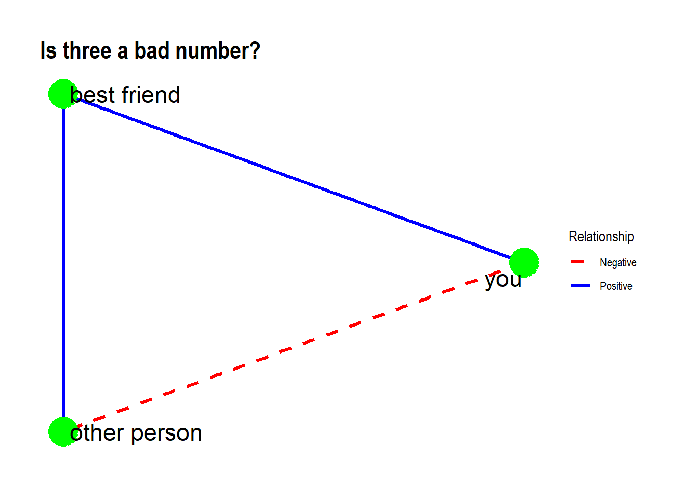
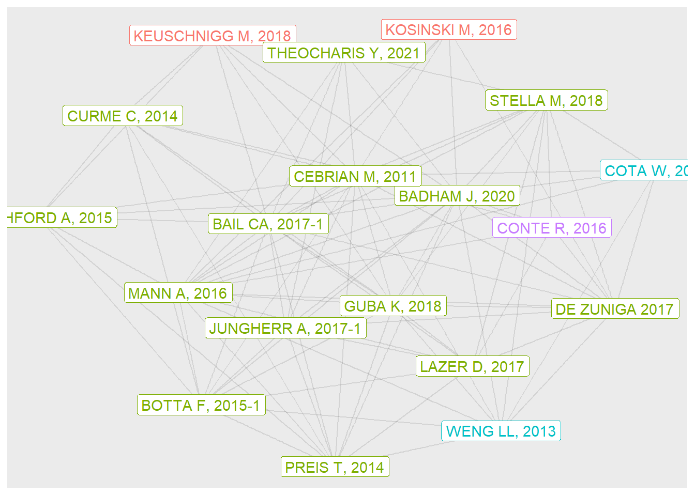

23 case study: the network structure of computational social science
Bibliometric networks are models of the structure of scholarly disciplines. There are a variety of methods to developing such networks. We’ll use an approach which is both simple and powerful, and that is to examine shared references or bibliographic couplings. In such a network, papers will be strongly linked if they have many references in common, and distant from each other when they share no or few references.
We begin with a collection of records of research articles that we have downloaded from the Web of Science, using the phrase “computational social science” as a search term. (A video on YouTube illustrates each step of this process).
A second video accompanies the code below, which was originally developed for the Summer Institute of Computational Social Science held in Jupiter, Florida in 2023.
After loading the needed libraries, we begin with a dataframe consisting of a list of records downloaded from the Web of Science. These are all papers which included the phrase ‘computational social science,’ as downloaded on 6/5/2023. The data include a ‘source’ field and a set of cited references as well as a bunch of other fields (metadata).
# for large jobs, set to TRUE to run this on only one reference file
debugging <- FALSE
dataDir <- "data/CompSocSci2023"
filenames <- list.files(dataDir, pattern = "*.txt",
full.names = TRUE)
if (debugging == TRUE) {filenames = filenames[1]}
biblioDF <- data.frame(as.list(filenames)) %>%
convert2df()##
## Converting your wos collection into a bibliographic dataframe
##
## Done!
##
##
## Generating affiliation field tag AU_UN from C1: Done!biblioDF %>%
rownames_to_column("source") %>%
select(source,CR) %>%
head(1) %>%
kable(caption = "Cited refs in one document") %>%
kable_styling()| source | CR |
|---|---|
| HOX JJ, 2017, METHODOLOGY-EUR | ATTEWELL P., 2015, DATA MINING SOCIAL S;AXELROD R, 1981, SCIENCE, V211, P1390, DOI 10.1126/SCIENCE.7466396;BOND RM, 2012, NATURE, V489, P295, DOI 10.1038/NATURE11421;CAMSTRA A, 1992, SOCIOL METHOD RES, V21, P89, DOI 10.1177/0049124192021001004;CIOFFI-REVILLA CLAUDIO., 2014, INTRO COMPUTATIONAL;DAAS P., 2012, NYENR S BIG DAT;DAWSON R. J. M., 1995, J STAT ED, V3;DONOHO D., 2015, 50 YEARS DATA SCI;FOSTER I., 2016, BIG DATA SOCIAL SCI;FRED MORSTATTER, 2013, IS SAMPLE GOOD ENOUG;GHANI R, 2017, STAT SOC BEHAV SCI, P147;GINSBERG J, 2009, NATURE, V457, P1012, DOI 10.1038/NATURE07634;GONCALVES-SA J., 2015, 2015 WINT S COMP SOC;GRANOVETTER MS, 1973, AM J SOCIOL, V78, P1360, DOI 10.1086/225469;GRISHENKO A., 2014, TWITTER ARCHITECTU 1;IBM, 2016, 4 VS BIG DAT;KOLLANYI B., 2016, 2016219 COMPROP;LANEY D., 2001, 3 D DATA MANAGEMENT, DOI DOI 10.1016/J.INFSOF.2008.09.005;LAZER D, 2014, SCIENCE, V343, P1203, DOI 10.1126/SCIENCE.1248506;LOEHLIN JC, 1965, J PERS SOC PSYCHOL, V2, P580, DOI 10.1037/H0022457;MADDEN M., 2013, TEENS SOCIAL MEDIA P;ONNELA JP, 2007, P NATL ACAD SCI USA, V104, P7332, DOI 10.1073/PNAS.0610245104;OREILLY RC, 2000, COMPUTATIONAL EXPLOR;PHELPS S., 2012, EMERGENCE SOCIAL NET, DOI 10.2139/SSRN.2109553, DOI 10.2139/SSRN.2109553;PRESENTI J., 2015, 5 NEW SERVICES EXPAN;ROBERTS M. E., 2016, COMPUTATIONAL SOCIAL, P51;SILBERZAHN R., 2015, CROWDSOURCING DATA A;TUKEY JW, 1962, ANN MATH STAT, V33, P1, DOI 10.1214/AOMS/1177704711;TUKEY JW, 1977, EXPLORATORY DATA ANA;VO H, 2017, STAT SOC BEHAV SCI, P125;WEBB EJ, 1966, UNOBTRUSIVE MEASURES;ZHU XIAOJIN, 2009, INTRO SEMISUPERVISED, DOI 10.2200/S00196ED1V01Y200906AIM006 |
23.0.1 from citation network to structural network
A citation network is a type of two-mode or bipartite network which consists of source papers, referenced papers, and the directed edges which link a subset of these. Here’s a fragment of our citation network, first as a list of citations (edges), then as a graph showing links between the two types of vertices or nodes (i.e., source papers in red, cited papers in green). Notice that the edges are directed (e.g., Hox 2017 cites Lazer 2014).
# illustration of a small fragment of the citation network
someSources <- biblioDF %>%
# take the first four sources
slice (1:4)
smallBiblioDF <- someSources %>%
# make them into a rectangular source * citation matrix
cocMatrix(Field = "CR", sep = ";") %>%
as.matrix() %>%
# then a list of edges
reshape2::melt() %>%
filter (value > 0) %>%
rename(source = 1, citation = 2) %>%
select(-value) %>%
group_by(citation) %>%
# then choose only papers cited more than once
filter(n()>1) %>%
ungroup
smallBiblioDF %>%
kable (caption = "A small citation network:
Edge list of papers cited > 1 time in four sources in CSS") %>%
kable_styling()| source | citation |
|---|---|
| TORNBERG P, 2021, BIG DATA SOC | CENTOLA D 2010 SCIENCE |
| ZHANG J, 2020, BIG DATA RES | CENTOLA D 2010 SCIENCE |
| TORNBERG P, 2021, BIG DATA SOC | CONTE R 2012 EUR PHYS J-SPEC TOP |
| BALTAR R, 2021, SIMBIOTICA | CONTE R 2012 EUR PHYS J-SPEC TOP |
| TORNBERG P, 2021, BIG DATA SOC | EDELMANN A 2020 ANNU REV SOCIOL |
| BALTAR R, 2021, SIMBIOTICA | EDELMANN A 2020 ANNU REV SOCIOL |
| TORNBERG P, 2021, BIG DATA SOC | KITCHIN R 2014 BIG DATA SOC |
| BALTAR R, 2021, SIMBIOTICA | KITCHIN R 2014 BIG DATA SOC |
| TORNBERG P, 2021, BIG DATA SOC | KRAMER ADI 2014 P NATL ACAD SCI USA |
| ZHANG J, 2020, BIG DATA RES | KRAMER ADI 2014 P NATL ACAD SCI USA |
| TORNBERG P, 2021, BIG DATA SOC | LAZER D 2009 SCIENCE |
| ZHANG J, 2020, BIG DATA RES | LAZER D 2009 SCIENCE |
| HOX JJ, 2017, METHODOLOGY-EUR | LAZER D 2014 SCIENCE |
| ZHANG J, 2020, BIG DATA RES | LAZER D 2014 SCIENCE |
| TORNBERG P, 2021, BIG DATA SOC | LAZER DMJ 2020 SCIENCE |
| BALTAR R, 2021, SIMBIOTICA | LAZER DMJ 2020 SCIENCE |
# plotted using qgraph
smallgraph <- smallBiblioDF %>%
qgraph::qgraph(labels = T,
label.cex = 4,
vTrans = 30,
border.color = "white",
edge.width = 4,
color = c(2,2,2,2,3,3,3,3,3,3,3,3,3),
title = "A small citation network: Common cites among four papers")
The two-mode citation network can be collapsed to one of two one-mode networks. A co-citation network is one which extracts citations (green nodes), and links them based on the number of times that they are cited by the same authors. We will look instead at bibliometric couplings, or links between the (pink) source papers. This will be a single mode, weighted, undirected network, with source papers as vertices and the number of shared references as edge weights. Here’s a graph showing the collapsed network based on just the papers cited above:
smallOneModeMatrix <- biblioNetwork(someSources, analysis = "coupling",
network = "references",
sep = ";") %>%
# Normalize adjusts weights; Salton algorithm takes shared refs / product of geometric means of n refs. This is what I have always done.
normalizeSimilarity(type = "salton") %>%
as.matrix() %>%
round(2)
diag(smallOneModeMatrix) <- 0
smallOneModeMatrix %>%
kable(caption = "A small structural network: Matrix showing shared references among 4 papers") %>%
kable_styling()| HOX JJ, 2017 | TORNBERG P, 2021 | ZHANG J, 2020 | BALTAR R, 2021 | |
|---|---|---|---|---|
| HOX JJ, 2017 | 0.00 | 0.00 | 0.01 | 0.00 |
| TORNBERG P, 2021 | 0.00 | 0.00 | 0.02 | 0.05 |
| ZHANG J, 2020 | 0.01 | 0.02 | 0.00 | 0.00 |
| BALTAR R, 2021 | 0.00 | 0.05 | 0.00 | 0.00 |
Based on the structure of shared references, Baltar and Hox appear to be quite different, distant from each other. (But don’t trust the result too much - small networks like this aren’t particularly stable). Regardless, this is a beginning of an understanding of the structure of scholarship in computational social science.
23.0.2 looking at the whole citation network
The bibliometrix package can quickly give summary statistics for citation networks. Here are some characteristics of the entire set of papers.
twoModeStats <- biblioAnalysis(biblioDF)#, sep = ";")
twoModeSummary <- twoModeStats |>
summary() # summary returns a list. look at it.##
##
## MAIN INFORMATION ABOUT DATA
##
## Timespan 1999 : 2023
## Sources (Journals, Books, etc) 310
## Documents 794
## Annual Growth Rate % 18.76
## Document Average Age 5.71
## Average citations per doc 21.14
## Average citations per year per doc 2.273
## References 35298
##
## DOCUMENT TYPES
## article 676
## article; book chapter 3
## article; data paper; early access 1
## article; early access 45
## article; proceedings paper 2
## book review 7
## book review; early access 1
## correction 5
## editorial material 28
## editorial material; book chapter 1
## letter 1
## letter; early access 1
## review 22
## review; early access 1
##
## DOCUMENT CONTENTS
## Keywords Plus (ID) 1400
## Author's Keywords (DE) 2228
##
## AUTHORS
## Authors 2055
## Author Appearances 2555
## Authors of single-authored docs 136
##
## AUTHORS COLLABORATION
## Single-authored docs 149
## Documents per Author 0.386
## Co-Authors per Doc 3.22
## International co-authorships % 32.87
##
##
## Annual Scientific Production
##
## Year Articles
## 1999 1
## 2000 1
## 2002 2
## 2005 2
## 2006 2
## 2008 2
## 2009 2
## 2010 3
## 2011 7
## 2012 10
## 2013 13
## 2014 21
## 2015 26
## 2016 38
## 2017 49
## 2018 78
## 2019 82
## 2020 83
## 2021 133
## 2022 177
## 2023 62
##
## Annual Percentage Growth Rate 18.76
##
##
## Most Productive Authors
##
## Authors Articles Authors Articles Fractionalized
## 1 CIOFFI-REVILLA C 12 CIOFFI-REVILLA C 6.10
## 2 MOAT HS 12 BAIL CA 3.95
## 3 PREIS T 12 O'BRIEN DT 3.83
## 4 PENTLAND A 9 MOAT HS 3.70
## 5 BAIL CA 8 PREIS T 3.70
## 6 FERRARA E 7 FARRELL J 3.00
## 7 JUNGHERR A 7 ITO N 2.92
## 8 ITO N 6 JUNGHERR A 2.92
## 9 JURGENS P 6 SASAHARA K 2.67
## 10 KOSINSKI M 6 MA J 2.64
##
##
## Top manuscripts per citations
##
## Paper DOI TC TCperYear NTC
## 1 LAZER D, 2009, SCIENCE 10.1126/science.1167742 1825 107.4 1.98
## 2 KOSINSKI M, 2013, P NATL ACAD SCI USA 10.1073/pnas.1218772110 1183 91.0 8.08
## 3 LUKE S, 2005, SIMUL-T SOC MOD SIM 10.1177/0037549705058073 584 27.8 2.00
## 4 WU YY, 2015, P NATL ACAD SCI USA 10.1073/pnas.1418680112 469 42.6 8.70
## 5 BAIL CA, 2018, P NATL ACAD SCI USA 10.1073/pnas.1804840115 467 58.4 14.43
## 6 VARGO CJ, 2018, NEW MEDIA SOC 10.1177/1461444817712086 228 28.5 7.04
## 7 FARRELL J, 2016, P NATL ACAD SCI USA 10.1073/pnas.1509433112 221 22.1 5.17
## 8 WANG Y, 2018, J PERS SOC PSYCHOL 10.1037/pspa0000098 218 27.2 6.73
## 9 CHANG RM, 2014, DECIS SUPPORT SYST 10.1016/j.dss.2013.08.008 196 16.3 3.61
## 10 CONTE R, 2012, EUR PHYS J-SPEC TOP 10.1140/epjst/e2012-01697-8 182 13.0 4.07
##
##
## Corresponding Author's Countries
##
## Country Articles Freq SCP MCP MCP_Ratio
## 1 USA 307 0.3906 238 69 0.225
## 2 UNITED KINGDOM 72 0.0916 41 31 0.431
## 3 CHINA 51 0.0649 29 22 0.431
## 4 GERMANY 49 0.0623 32 17 0.347
## 5 JAPAN 42 0.0534 34 8 0.190
## 6 ITALY 33 0.0420 16 17 0.515
## 7 NETHERLANDS 20 0.0254 8 12 0.600
## 8 SWITZERLAND 18 0.0229 13 5 0.278
## 9 CANADA 17 0.0216 11 6 0.353
## 10 AUSTRALIA 16 0.0204 7 9 0.562
##
##
## SCP: Single Country Publications
##
## MCP: Multiple Country Publications
##
##
## Total Citations per Country
##
## Country Total Citations Average Article Citations
## 1 USA 8628 28.10
## 2 UNITED KINGDOM 3051 42.38
## 3 ITALY 861 26.09
## 4 GERMANY 732 14.94
## 5 CHINA 420 8.24
## 6 NETHERLANDS 331 16.55
## 7 SWITZERLAND 304 16.89
## 8 DENMARK 249 24.90
## 9 KOREA 232 25.78
## 10 SPAIN 227 18.92
##
##
## Most Relevant Sources
##
## Sources Articles
## 1 JOURNAL OF COMPUTATIONAL SOCIAL SCIENCE 199
## 2 PROCEEDINGS OF THE NATIONAL ACADEMY OF SCIENCES OF THE UNITED STATES OF AMERICA 30
## 3 EPJ DATA SCIENCE 21
## 4 SOCIAL SCIENCE COMPUTER REVIEW 21
## 5 ROYAL SOCIETY OPEN SCIENCE 14
## 6 JASSS-THE JOURNAL OF ARTIFICIAL SOCIETIES AND SOCIAL SIMULATION 11
## 7 BIG DATA & SOCIETY 9
## 8 NATURE HUMAN BEHAVIOUR 9
## 9 PLOS ONE 9
## 10 SCIENTIFIC REPORTS 8
##
##
## Most Relevant Keywords
##
## Author Keywords (DE) Articles Keywords-Plus (ID) Articles
## 1 COMPUTATIONAL SOCIAL SCIENCE 367 MODEL 43
## 2 SOCIAL MEDIA 91 SCIENCE 43
## 3 BIG DATA 62 BEHAVIOR 42
## 4 MACHINE LEARNING 60 SOCIAL MEDIA 42
## 5 TWITTER 47 COMMUNICATION 37
## 6 NATURAL LANGUAGE PROCESSING 38 BIG DATA 36
## 7 SOCIAL NETWORKS 29 DYNAMICS 36
## 8 COVID-19 28 MEDIA 36
## 9 AGENT-BASED MODELING 26 TWITTER 35
## 10 DATA SCIENCE 21 NETWORKS 34twoModeSummary |>
pluck(1) |>
unlist() |>
kable(
caption = "Citation network: Key features") %>%
kable_styling() | x |
|---|
| MAIN INFORMATION ABOUT DATA |
| Timespan 1999 : 2023 |
| Sources (Journals, Books, etc) 310 |
| Documents 794 |
| Annual Growth Rate % 18.76 |
| Document Average Age 5.71 |
| Average citations per doc 21.14 |
| Average citations per year per doc 2.273 |
| References 35298 |
| DOCUMENT TYPES |
| article 676 |
| article; book chapter 3 |
| article; data paper; early access 1 |
| article; early access 45 |
| article; proceedings paper 2 |
| book review 7 |
| book review; early access 1 |
| correction 5 |
| editorial material 28 |
| editorial material; book chapter 1 |
| letter 1 |
| letter; early access 1 |
| review 22 |
| review; early access 1 |
| DOCUMENT CONTENTS |
| Keywords Plus (ID) 1400 |
| Author’s Keywords (DE) 2228 |
| AUTHORS |
| Authors 2055 |
| Author Appearances 2555 |
| Authors of single-authored docs 136 |
| AUTHORS COLLABORATION |
| Single-authored docs 149 |
| Documents per Author 0.386 |
| Co-Authors per Doc 3.22 |
| International co-authorships % 32.87 |
Here’s a manually-constructed table of the “most cited journals.”
sourceJournals <- biblioDF %>%
citations(field = "article", sep = ";") %>%
# output of above is a list... pluck gets the first element
# which is a table of sources
pluck(3) %>%
as_tibble() %>%
rename(CitedJournal = 1)
sourceJournals %>%
count(CitedJournal) %>%
arrange(desc(n)) %>%
head(10) %>%
kable (caption = "Most cited journals in Comp Soc Sci") %>%
kable_styling()| CitedJournal | n |
|---|---|
| PLOS ONE | 425 |
| P NATL ACAD SCI USA | 388 |
| NA | 319 |
| SCIENCE | 250 |
| AM SOCIOL REV | 227 |
| J PERS SOC PSYCHOL | 224 |
| NATURE | 223 |
| AM J SOCIOL | 182 |
| LECT NOTES COMPUT SC | 159 |
| SCI REP-UK | 152 |
23.0.2.1 the need to inspect/clean data
One drawback of bibliometrix and packages like it is that they remove us somewhat from the data. Here, ‘NA’ is the third most common source of papers. We look more closely at these records to see if there is a problem. Here’s one way…
# there are no papers where the cited field is empty or NA
# so this gets us nowhere
# sourceJournals %>%
# filter(CitedJournal == "" |
# CitedJournal == "NA" )
set.seed(33458)
countsonly <- sourceJournals %>%
group_by(CitedJournal) %>%
count(CitedJournal)
countNA <- countsonly %>%
filter(is.na(CitedJournal)) %>%
as_tibble %>%
select(n) %>%
as.integer()
sources <- sourceJournals %>%
left_join(countsonly)
biblioDF %>%
citations(field = "article", sep = ";") %>%
pluck(1) %>%
as_tibble() %>%
bind_cols(sources) %>%
rename(papercites = 2, journalcites = 4) %>%
filter(journalcites == countNA) %>%
select(CR) %>%
sample_n(20) %>%
kable (caption = "Random sample of references with source journal coded as NA") %>%
kable_styling()| CR |
|---|
| ANONYMOUS, REPRESENTING SOCIAL |
| THE UNITED NATIONS OFFICE FOR DISASTER, DISASTER STATISTICS |
| ANONYMOUS, ALLSIDES MED BIAS RA |
| U.S. DEPARTMENT OF HEALTH AND HUMAN SERVICES ADMINISTRATION FOR CHILDREN AND FAMILIES ADMINISTRATION ON CHILDREN YOUTH AND FAMILIES CHILDREN’S BUREAU (2021), CHILD MALTREATMENT |
| WORLD BANK, POPULATION DENSITY |
| ANONYMOUS, PARTITIONING PREDICT |
| WHO, WHO COR COVID 19 DAS |
| ADRIAN M., TERADATA MAGAZINE |
| ANONYMOUS, 10 INT AAAI C WEB SO |
| ROMIR, DYN HAPP IND RUSS WO |
| MACARTHUR A., LIFEWIRE 0206 |
| NATIONAL AUDUBON SOCIETY, CHRISTM BIRD COUNT |
| ARTEFACT GROUP, ETH EXPL PACK |
| NAI J., J PERSONALITY SOCIAL |
| CRANDALL D., P 14 ACM SIGKDD INT |
| HARTFORD, FINANCIAL TIMES |
| STEPHENS N, PALGRAVE COMMUNICATI |
| BHARAT K, GOOGLE NEWS COVERAGE |
| TERRA DOTTA, TACKLING GENDER GAP |
| STATISTA, MOST POPS SOC NETW W |
These NA appear to be mostly detritus, cites to anonymous sources, etc. There are better ways of cleaning the data (including restricting the set of papers to articles and reviews), but we’ll ignore these for now.
23.0.3 the structural network: Centrality and community structure
We now reduce the two mode network to a one-mode for the whole dataset, normalizing the edge weights as before, and setting the diagonal entries to 0.
We then use the tidygraph package to compute several measures of centrality and community structure.
# random seed to ensure reproducible results
# esp for centrality and community analyses
set.seed(33458)
oneModeMatrix <- biblioNetwork(biblioDF,
analysis = "coupling",
network = "references",
sep = ";") %>%
normalizeSimilarity(type = "salton") %>%
as.matrix()
str(oneModeMatrix)## num [1:794, 1:794] 1 0 0.0128 0 0 ...
## - attr(*, "dimnames")=List of 2
## ..$ : chr [1:794] "HOX JJ, 2017" "TORNBERG P, 2021" "ZHANG J, 2020" "BALTAR R, 2021" ...
## ..$ : chr [1:794] "HOX JJ, 2017" "TORNBERG P, 2021" "ZHANG J, 2020" "BALTAR R, 2021" ...# save it as a graph for igraph/tidygraph
oneModeGraph <- oneModeMatrix %>%
graph_from_adjacency_matrix(mode = "undirected",
diag = FALSE,
weighted = TRUE)
# tidygraph allows us to look at graphs
# as data frames of nodes and edges
tidyBibGraph <- oneModeGraph %>%
as_tbl_graph() %>%
# we activate nodes to assign new measures for each node
activate(nodes) %>%
mutate(centralPR = centrality_pagerank(weights = weight)) %>%
mutate(nodePRRank = rank(-centralPR)) %>%
# mutate(centralWD = centrality_degree(weights = weight)) %>%
mutate(central0D = centrality_degree(weights = NULL)) %>%
mutate(communityLouv = group_louvain(weights = weight)) %>%
mutate(group = as.factor(group_louvain())) %>%
# mutate(communityWalk = group_walktrap(weights = weight)) %>%
mutate(ID = row_number())
edgeList <- tidyBibGraph %>%
activate(edges) %>%
as_tibble()
nodeList <- tidyBibGraph %>%
activate(nodes) %>%
as_tibble()23.0.4 visualizing the network
I use ggraph to try a few visualizations within R - it plays nicely with tidygraph. In the first visualization, all but the 22 isolates are plotted. It suggests that there is a community structure, but nothing beyond this.
nNodesToPlot <- 794
minEdgeWeightToPlot <- .00001
library (ggraph)
tidyBibGraph %>%
activate(nodes) %>%
filter(central0D > 0) %>%
filter(nodePRRank < nNodesToPlot) %>%
activate(edges) %>%
filter(weight > minEdgeWeightToPlot) %>%
ggraph(layout = 'stress') +
geom_edge_link(alpha = .1) +
geom_node_point(aes(size = (centralPR),
color = as.factor(communityLouv))) +
# geom_node_label(aes(label = name,
# color = as.factor(communityLouv))) +
theme(legend.position = "none")In the second plot, I show just the top 20 nodes, but also include labels for these.
nNodesToPlot <- 20
minEdgeWeightToPlot <- .05
tidyBibGraph %>%
activate(nodes) %>%
filter(nodePRRank < nNodesToPlot) %>%
activate(edges) %>%
filter(weight > minEdgeWeightToPlot) %>%
ggraph(layout = 'stress') +
geom_edge_link(alpha = .1) +
geom_node_point(aes(size = (centralPR),
color = as.factor(communityLouv))) +
geom_node_label(aes(label = name,
color = as.factor(communityLouv))) +
theme(legend.position = "none")
The graph shows papers in four communities, three of which are represented by just one or two papers. Note that some of the papers are odd - a book review, for example.
nodeInfo <- biblioDF %>%
mutate(ID = row_number()) %>%
select(AB, TI, DE, ID, J9) %>%
# ID is a text field of keywords in the bib data
# I combine it with the other text fields, then
# create a new ID of text number to combine with
# the node centrality etc
mutate(alltext = paste(TI, AB, DE, ID, sep = " ")) %>%
select(-AB, -DE, -ID) %>%
mutate(ID = row_number())
allNodeInfo <- nodeList %>%
# filter(nodePRRank < 21) %>%
left_join(nodeInfo, by = 'ID')
nodeList %>%
filter(nodePRRank < 21) %>%
left_join(nodeInfo) %>%
select (name, nodePRRank, communityLouv, TI) %>%
arrange(communityLouv, nodePRRank) %>%
kable(caption = "Top papers in CSS by PR and community") %>%
kable_styling()| name | nodePRRank | communityLouv | TI |
|---|---|---|---|
| KEUSCHNIGG M, 2018 | 3 | 1 | ANALYTICAL SOCIOLOGY AND COMPUTATIONAL SOCIAL SCIENCE |
| KOSINSKI M, 2016 | 12 | 1 | MINING BIG DATA TO EXTRACT PATTERNS AND PREDICT REAL-LIFE OUTCOMES |
| BADHAM J, 2020 | 1 | 2 | INTRODUCTION TO COMPUTATIONAL SOCIAL SCIENCE, 2ND EDITION |
| PREIS T, 2014 | 4 | 2 | ADAPTIVE NOWCASTING OF INFLUENZA OUTBREAKS USING GOOGLE SEARCHES |
| BOTTA F, 2015-1 | 5 | 2 | QUANTIFYING CROWD SIZE WITH MOBILE PHONE AND TWITTER DATA |
| CEBRIAN M, 2011 | 6 | 2 | ENGINEERING TRADE-OFFS IN SOCIAL ORGANIZATION: THE BEGINNINGS OF A COMPUTATIONAL SOCIAL SCIENCE |
| MANN A, 2016 | 7 | 2 | COMPUTATIONAL SOCIAL SCIENCE |
| BAIL CA, 2017-1 | 8 | 2 | TAMING BIG DATA: USING APP TECHNOLOGY TO STUDY ORGANIZATIONAL BEHAVIOR ON SOCIAL MEDIA |
| LAZER D, 2017 | 10 | 2 | DATA EX MACHINA: INTRODUCTION TO BIG DATA |
| LETCHFORD A, 2015 | 11 | 2 | THE ADVANTAGE OF SHORT PAPER TITLES |
| GUBA K, 2018 | 13 | 2 | BIG DATA IN SOCIOLOGY: NEW DATA, NEW SOCIOLOGY? |
| STELLA M, 2018 | 14 | 2 | BOTS INCREASE EXPOSURE TO NEGATIVE AND INFLAMMATORY CONTENT IN ONLINE SOCIAL SYSTEMS |
| CURME C, 2014 | 15 | 2 | QUANTIFYING THE SEMANTICS OF SEARCH BEHAVIOR BEFORE STOCK MARKET MOVES |
| JUNGHERR A, 2017-1 | 16 | 2 | THE EMPIRICIST’S CHALLENGE: ASKING MEANINGFUL QUESTIONS IN POLITICAL SCIENCE IN THE AGE OF BIG DATA |
| DE ZUNIGA 2017 | 18 | 2 | CITIZENSHIP, SOCIAL MEDIA, AND BIG DATA: CURRENT AND FUTURE RESEARCH IN THE SOCIAL SCIENCES |
| THEOCHARIS Y, 2021 | 19 | 2 | COMPUTATIONAL SOCIAL SCIENCE AND THE STUDY OF POLITICAL COMMUNICATION |
| PREIS T, 2013 | 20 | 2 | QUANTIFYING THE DIGITAL TRACES OF HURRICANE SANDY ON FLICKR |
| WENG LL, 2013 | 2 | 3 | VIRALITY PREDICTION AND COMMUNITY STRUCTURE IN SOCIAL NETWORKS |
| COTA W, 2019 | 17 | 3 | QUANTIFYING ECHO CHAMBER EFFECTS IN INFORMATION SPREADING OVER POLITICAL COMMUNICATION NETWORKS |
| CONTE R, 2016 | 9 | 5 | TOWARDS COMPUTATIONAL AND BEHAVIORAL SOCIAL SCIENCE |
23.0.5 exploring the communities
One way to see and understand this community structure is to explore the datausing an interactive network tool (Gephi). In order to do this, we’ll write the nodes and edges to disk in two separate writes.
Another way to understand the communities is to compare the language of different communities, using the combined text fields. That is explored in a second r markdown script; CSS2_NetworkToText.Rmd.